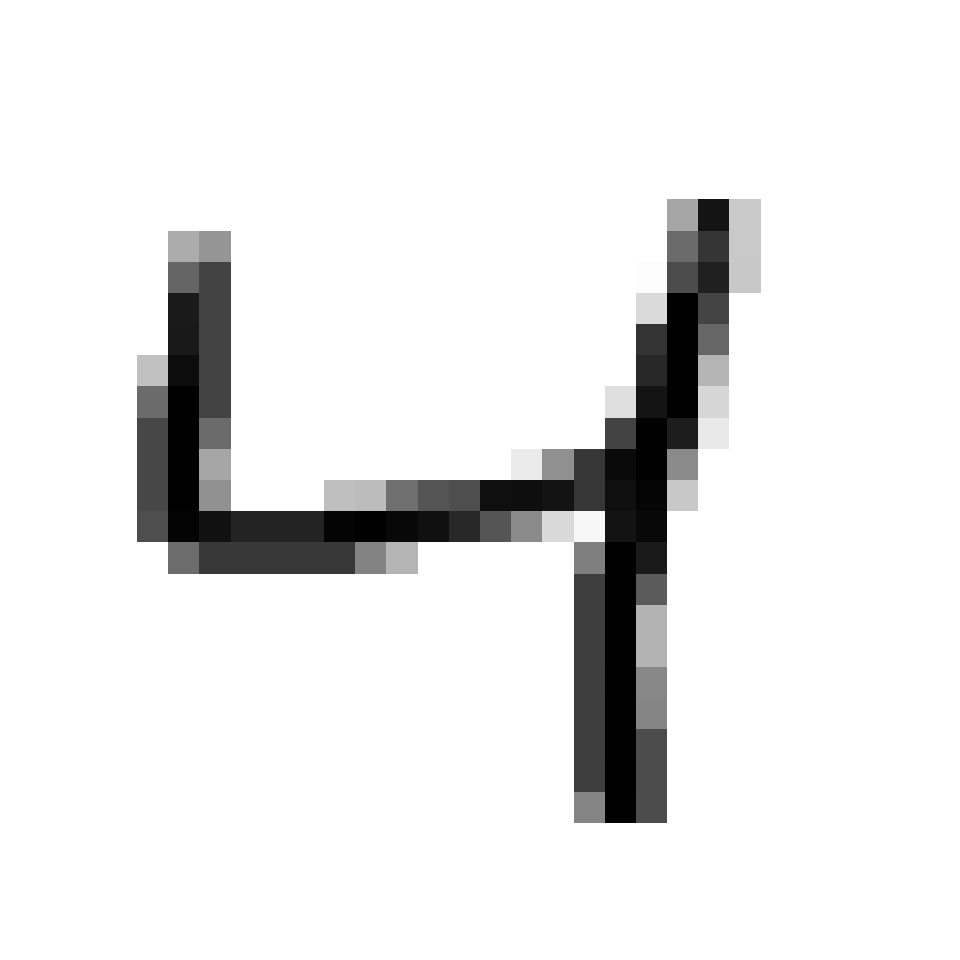
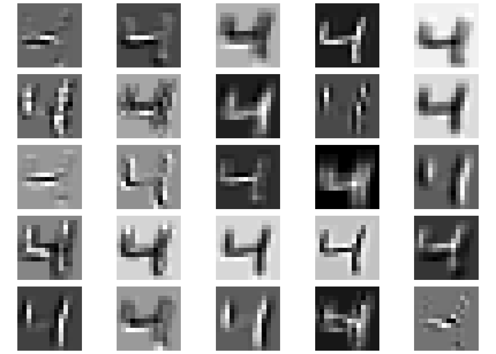
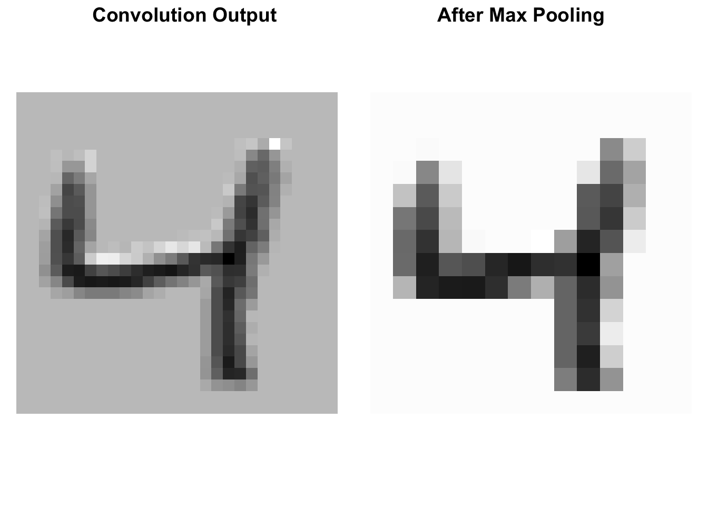
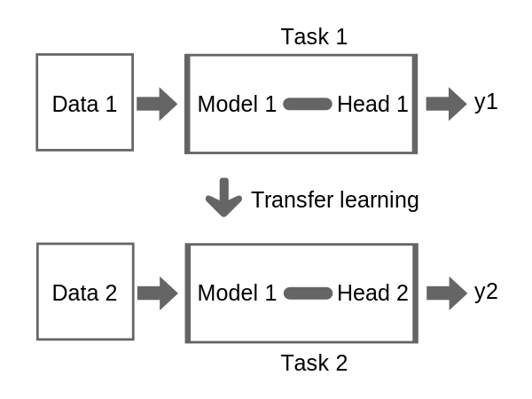

Convolutional Neural Networks
In this notebook, we will learn about convolutional neural networks (CNNs) that are used for image classification tasks.
Convolutional Layers
The central component of a CNN is the convolutional layer. It works by sliding a kernel over the input image, performing element-wise multiplication with the overlapping pixel values, and summing the results to produce a single output value for each position of the kernel.

CNNs encode several strong inductive biases about visual data:
- Locality: Nearby pixels are more likely to be related than distant ones.
- Translation Invariance: Features should be detected regardless of their position.
- Hierarchical Composition: Complex patterns are built from simpler ones.
These biases make CNNs particularly effective for image-related tasks because they align with our understanding of how visual information is structured. As an example, we will apply a convolutional layer to an image from MNIST.
Such an image is a 3D tensor with dimensions [1, 28, 28], where the first dimension are the number of channels (would be 3 for RGB images, but MNIST is grayscale), and the other two dimensions are the spatial dimensions of the image.
str(image)Float [1:1, 1:28, 1:28]To create a convolutional layer for a 2D image, we can use the nn_conv2d function.
conv_layer <- nn_conv2d(in_channels = 1, out_channels = 1, kernel_size = 3, padding = 1)
str(conv_layer(image))Float [1:1, 1:28, 1:28]Because we have encoded more information about the structural relationship between the input tensor and the output tensor (the same filter is applied to the entire image), the convolutional layer has far fewer parameters than a fully connected layer.
conv_layer$parameters$weight
torch_tensor
(1,1,.,.) =
0.2229 -0.0028 0.1567
0.3100 0.3226 0.1191
-0.3081 0.1674 -0.1031
[ CPUFloatType{1,1,3,3} ][ requires_grad = TRUE ]
$bias
torch_tensor
0.1376
[ CPUFloatType{1} ][ requires_grad = TRUE ]Below, we show the output of the first convolutional layer from a (trained) ResNet18 model applied to an image from MNIST (which has 28x28 pixels).

Weights of a Fully Connected Layer
Question 1: How many parameters does a fully connected layer with the same number of inputs (1, 28, 28) and outputs (1, 28, 28) have?
Answer
The input has \(28 \times 28 = 784\) pixels and the output as well. The weights of the fully connected layer are a \(784 \times 784\) matrix and the bias also has 784 elements, so the number of parameters is \(784 \times 784 + 784 = 615440\), much more than our simple convolutional kernel.
Max Pooling
While convolutional layers extract local features from an image by applying a kernel over the input, max pooling is used to downsample the feature maps. Instead of applying a filter, max pooling simply partitions the input into non-overlapping (or sometimes overlapping) regions and selects the maximum value from each region. Below, we demonstrate it in action. We start by applying a convolutional layer to an MNIST image to obtain feature maps and then apply a 2×2 max pooling layer (with stride 2) on the convolution output. The two results are visualized side-by-side.
# Create a max pooling layer with a 2x2 kernel and stride 2
pool_layer <- nn_max_pool2d(kernel_size = 2, stride = 2)
# Apply the convolutional layer to the image (as before)
conv_output <- conv_layer(image)
# Now apply the max pooling layer to the result from the convolution.
pooled_output <- pool_layer(conv_output)
# Visualize the original convolution output and the pooled output.
p_conv <- plot_2d_image(conv_output$squeeze())
p_pool <- plot_2d_image(pooled_output$squeeze())
# Use cowplot to display the two images side-by-side for easy comparison.
cowplot::plot_grid(p_conv, p_pool, labels = c("Convolution Output", "After Max Pooling"))
Architecture Design
Another essential aspect of training neural networks efficiently and effectively is the design of the network architecture, which can be a challenging task. However, for many problems, there are predefined architectures that perform well and can be used. Unless there is a specific reason to design a new architecture, it is recommended to use such an architecture.
Note
Because the Python deep learning ecosystem is so large, many more architectures are implemented in Python than in R. One way to use them in R is to simply translate the PyTorch code to (R-)torch. While PyTorch and (R-)torch are quite similar, there are some differences, e.g., 1-based and 0-based indexing. The torch website contains a brief tutorial on this topic.
Nonetheless, we will cover important techniques that can be used to speed up the training process, namely batch normalization and dropout.
To illustrate its effectiveness, we will define a simple CNN, with and without batch normalization, train it on CIFAR-10, and compare their performances.
To build the neural networks, we will use mlr3torch, which allows building architectures from PipeOps. Recall that the po("torch_ingress_ltnsr") is a special PipeOp that marks the input of the neural network. Note that po("nn_relu_1") is equivalent to po("nn_relu", id = "nn_relu_1"). We need to specify unique IDs for each PipeOp as this is required in mlr3pipelines graphs.
cnn_bn = po("torch_ingress_ltnsr") %>>%
po("nn_conv2d_1", out_channels = 32, kernel_size = 3, stride = 1, padding = 1) %>>%
po("nn_batch_norm2d_1") %>>%
po("nn_relu_1") %>>%
po("nn_max_pool2d_1", kernel_size = 2, stride = 2) %>>%
po("nn_conv2d_2", out_channels = 64, kernel_size = 3, stride = 1, padding = 1) %>>%
po("nn_batch_norm2d_2") %>>%
po("nn_relu_2") %>>%
po("nn_max_pool2d_2", kernel_size = 2, stride = 2)
cnn = po("torch_ingress_ltnsr") %>>%
po("nn_conv2d_1", out_channels = 32, kernel_size = 3, stride = 1, padding = 1) %>>%
po("nn_relu_1") %>>%
po("nn_max_pool2d_1", kernel_size = 2, stride = 2) %>>%
po("nn_conv2d", out_channels = 64, kernel_size = 3, stride = 1, padding = 1) %>>%
po("nn_relu_2") %>>%
po("nn_max_pool2d_2", kernel_size = 2, stride = 2)
head = po("nn_flatten") %>>%
po("nn_linear", out_features = 128) %>>%
po("nn_relu") %>>%
po("nn_head")
model = po("torch_optimizer", optimizer = t_opt("adam", lr = 0.003)) %>>%
po("torch_model_classif",
epochs = 100,
batch_size = 256,
predict_type = "prob",
device = "cuda"
)We evaluate the two models on the CIFAR-10 image classification task that we have introduced earlier. There, the goal is to classify images into 10 different classes.
net_bn = as_learner(cnn_bn %>>% head %>>% model)
net_bn$id = "net_bn"
net = as_learner(cnn %>>% head %>>% model)
net$id = "net"
cifar10 = tsk("cifar10")
resampling = rsmp("holdout")$instantiate(cifar10)
design = benchmark_grid(
task = cifar10,
learner = list(net_bn, net),
resampling = resampling
)
design task learner resampling
<char> <char> <char>
1: cifar10 net_bn holdout
2: cifar10 net holdoutbmr = benchmark(design)
bmr$aggregate()Transfer Learning
Transfer learning is a powerful technique in machine learning where a pre-trained model developed for a specific task is reused as the starting point for a model on a second, related task. Instead of training a model from scratch, which can be time-consuming and computationally expensive, transfer learning leverages the knowledge gained from a previously learned task to improve learning efficiency and performance on a new task.
The advantages of transfer learning are:
- Reduced Training Time: Leveraging a pre-trained model can significantly decrease the time required to train a new model, as the foundational feature extraction layers are already optimized.
- Improved Performance: Transfer learning can enhance model performance, especially when the new task has limited training data. The pre-trained model’s knowledge helps in achieving better generalization.
- Resource Efficiency: Utilizing pre-trained models reduces the computational resources needed, making it feasible to develop sophisticated models without extensive hardware.
When the model is then trained on a new task, only the last layer is replaced with a new output layer to adjust for the new task.
This is visualized below:

mlr3torch offers various pretrained image networks that are available through the torchvision package. The ResNet-18 model is a popular pre-trained model that was pretrained on ImageNet. We can use the pretrained weights by setting the pretrained parameter to TRUE.
resnet = lrn("classif.resnet18",
pretrained = TRUE,
epochs = 2,
batch_size = 256,
validate = 0.3,
measures_valid = msr("classif.logloss"),
device = "cuda",
predict_type = "prob",
id = "pretrained"
)
resnet_no_pretrain = resnet$clone(deep = TRUE)
resnet_no_pretrain$param_set$set_values(
pretrained = FALSE
)
resnet_no_pretrain$id = "not_pretrained"
grid = benchmark_grid(
task = tsk("cifar10"),
learner = list(resnet, resnet_no_pretrain),
resampling = rsmp("insample")
)
bmr = benchmark(grid, store_models = TRUE)
bmr$aggregate()When fine-tuning a pretrained model like ResNet-18, it’s common to observe instabilities in gradients, which can manifest as fluctuating validation performance.
To address this, one can for example freeze the pretrained layers (for some epochs) and only train the new output head. In mlr3torch, this can be achieved by using the t_clbk("unfreeze") callback.
In-Context Learning
Large foundation models (such as GPT-4) even allow performing tasks on which they were not pretrained on without any finetuning. This is referred to as in-context learning or zero-shot learning. There, the task is fed into the model during inference: “Hey ChatGPT, is What is the sentiment of this sentence. Return -1 for sad, 0 for neutral, 1 for happy: